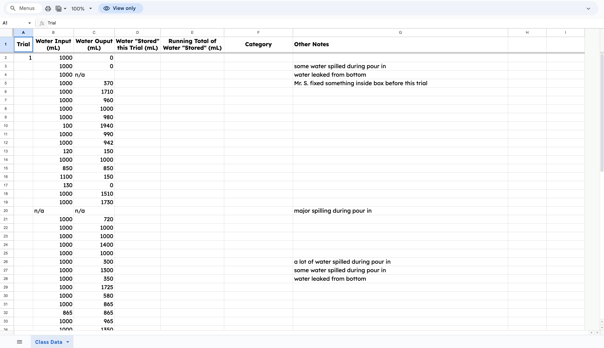
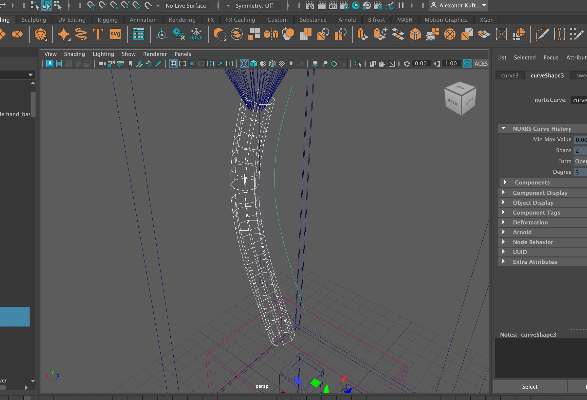

The skill I demonstrated the most during the Black Box Investigation was Creativity and Innovation. When designing our Photoshop model my group had to take the data we collected from our water trials and come up with an original idea for what could be inside the box. I used Photoshop and a drawing tablet to turn that idea into a visual diagram, which required creative thinking to figure out how to represent something none of us had ever actually seen. I also had to innovate throughout the process, moving from a 2D Photoshop draft to a physical cardboard model to a Maya animation, each step required me to rethink and rebuild the idea in a completely new way.
In my New Media and Tech class we were tasked to try and guess what was inside of our teacher’s Mr.Sinusas Mystery Box at Esums Tech. This mystery Black box is a huge plastic box with a funnel at the top and the only other opening was a plastic tube with a container to catch the water. And the black box was made 16 years ago by Mr. Sinusas.
We would test using 1000ml of water and it would come out with various amounts of water. It could’ve been lower or it could've come out with more even if we’d insert the same amount of water. And what we think was inside is previous water which then comes out differently as you pour it. Since 18 out of the 47 came out with less water, 9 out of the 47 came out the same amount, and the other 26 had a bit more coming out or had something go wrong during the trial. And as we were doing this we learned the use of rule of thirds, framing, and angle as we learned how to use our cameras.

